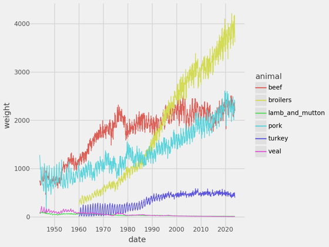
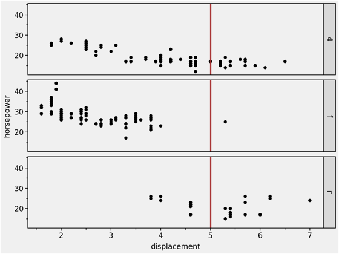

Basic Scatter Plot
Coloured Point Bubbles
Points & Linear Models
A Single Trend Line
Multiple Trend Lines

A Trend Line Per Facet
Upper & Lower Trends
Facets with a Vertical Line

Area Under Line
Two Variable Bar Plot
Ordered Horizontal Bars
Bars with Group Percentages
Stacked Bars with Group Percentages
Bar Plot with Counts
Horizontal Bar Plot with Counts
A Basic Boxplot
Basic Density Plot
Density Plot with Groups
Density Plots + Histograms
Shaded Range Under a Density Plot
Basic Histogram
Violins, Boxes, Points & Lines
Periodic Table
Annotated Heatmap
Simple heatmap
A Map from geodatasets
geodatasets
The Territories of Westeros
Text Outside the Panel(s)
Black & White
Classic
An Elaborate Range Plot
Guitar Neck